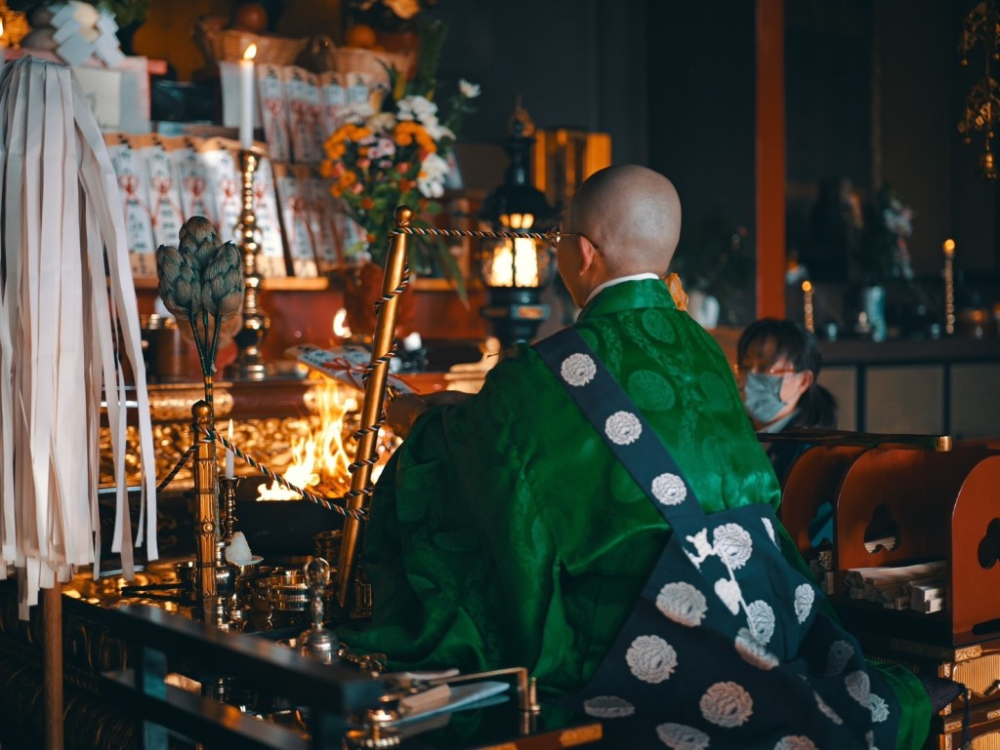

成田山瀧泉寺
北海道登別市にある真言宗智山派のお寺です
御本尊に不動明王をお祀りしています
各種法要・永代供養・水子供養・納骨
ご祈祷・御朱印のご案内・修行体験

ご希望の内容をお選びください
約20分〜30分
平服でお越しいただけます。
かしこまった服装でなくて大丈夫です。
特にございません。
水子供養の場合は、お供えものもご一緒にお持ちください。
LINE・メール・お電話にてご予約ください。
※合同水子供養・護摩祈祷は予約不要です
ご予約のお時間にお越しください。
本堂にて受付をいたします。
受付にてご祈祷料をお納めください。
住職がお経をお唱えし、
心を込めてご祈祷いたします。
ご祈祷後、お札やお守りをお渡しいたします。
（ご祈祷内容によります）
以下の内容をお伝えいただくとスムーズです
成田山瀧泉寺では、お不動さまのご加護のもと、厄払いをはじめとした各種ご祈祷を承っております。
予約制で随時受け付けております。
新車のご購入、車検後、また日々の交通安全を願い、お車のご祈祷を承ります。
お車ごと境内にお入りいただけます。
お車を本堂の前にお停めいただき、お車とご本人さまのご祈祷を一緒に行います。ご祈祷後、交通安全のお守りをお渡しいたします。
亡くなったお子さまの安らかなご冥福を祈り、心を込めてご供養いたします。
おひとりで抱え込まず、どうぞ安心してご相談ください。
水子の供養は毎年の供養をおすすめしております。
お供えもの（お花・お菓子など）をお持ちいただければ、一緒にお供えいたします。特別なご用意がなくても大丈夫です。
入試や資格試験など、大切な試験を控えた方のために、学業成就・合格祈願のご祈祷を行います。
お不動さまに学業成就をお願いし、試験に向けた心の安定と集中力をお祈りいたします。ご祈祷後、学業成就のお守りをお渡しいたします。
お子さまの健やかな成長を願い、七五三・お宮参りのご祈祷を承ります。
ご家族みなさまでお越しください。
護摩の炎にお願いごとを書いた護摩木をくべ、お不動さまに祈りを捧げます。